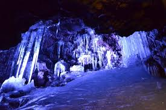
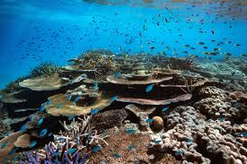
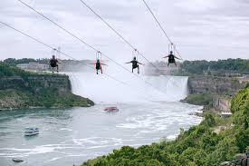
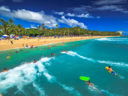

Top 5 place in the world that is worth your money to visit
Many place around the world have something that's make them stand out from other place like the nature beautiful or the history behind them. So this is my thought on the most beatiful place and the most interesting history around the world.
5)Aokigahara Forest (Japan)
Locate at the northwestern base of Mount Fuji, The forest is also known as the Sea of Tree in Japan.Aokigahara forest is fill will alot of tree make the place look like no human have ever touch it. It's look The forest is also known as "The perfect place to suicide" or "The suicide Forrest" because of the high rate of Japanese man take their last breath each and every years. Because of this the forest, the government of Japan have put up many sign to warn the people have a thought of end their life have chance to think again.But why do you think this is the best place to visit?One of the place inside Aokigahara forest is worth to see is the Narusawa Ice cave. The ice cave being frozen for year-round so you can experiment the chill of the cave even on a very hot summer day. The forest is also fill with endanger plant and more than 30 species live inside the forest.
;
4)Great Barrier Reef(Australia)
One of the most remarkable nature of Australia, the Great Barrier Reef have a stunning beauty and also the world's largest coral system. Tourist can experiment many activity like: Whale watching, Swimming with dolphin, Diving,etc.You can also witness 1500 species of fish,over 200 types of bird and you can also see penguin hang around the small rock island It can be the one time and remember-able experiment in your life. It is also one of the seven natural wonder of the world. It can be one time experiment for young people due to the climate change cause coral to bleed and die off.
;
3)Niagara Fall(United States)
Make out off 3 waterfall. Niagara Fall is the one of the world largest waterfall. you can visit the Skylon Tower near the water fall. It is also the tallest total entertainment complex. You can observe the fall from 233 meter aways indoor or outdoor. If you wanna fell a little bit scare you can go on a wildplay Niagara fall,"Flight without feather". It can be very terrify before you start but it will be one of the best experiment in your life.
;
2)Bali(Indonesia)
One of the most popular island holiday in Indonesia. The island's home to an ancient culture that's known for it's warm hospitality.After sunset, famous nightspots come to life offering exciting clubbing and packed dance floors. Inland, towering volcanoes and pristine jungles greet you with plenty to see and do. Most can't stay away from the beach for long, though.
;
1)Hawaii Island (United States)
Hawaii Island is one of the largest island in United States. It is home to a lots of volcano extinct or still active. Hawaii island is also home to many beautiful beach and wonderful food. You can also go to farmer markers, camping near the beach or even a helicopter tours
;